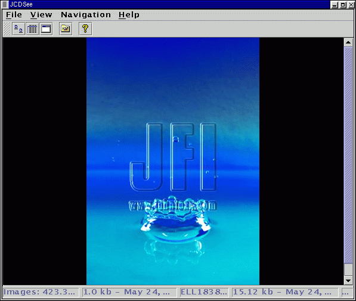

JCDSee Help - Fullscreen |
In fullscreen mode you can view the complete image and zoom in and out.

Use space and backspace to navigate. Press the right mouse button for a popup menu with som simple options.
Zoom
To zoom in press the + key on the keypad, and to zoom out use the -
key.
Slideshow
You can start a slideshow by selecting it from the Navigation-menu
och in the popup menu as described above. The slideshow will slide through
all images in the selected folder. For slideshow settings, see section
abour settings.